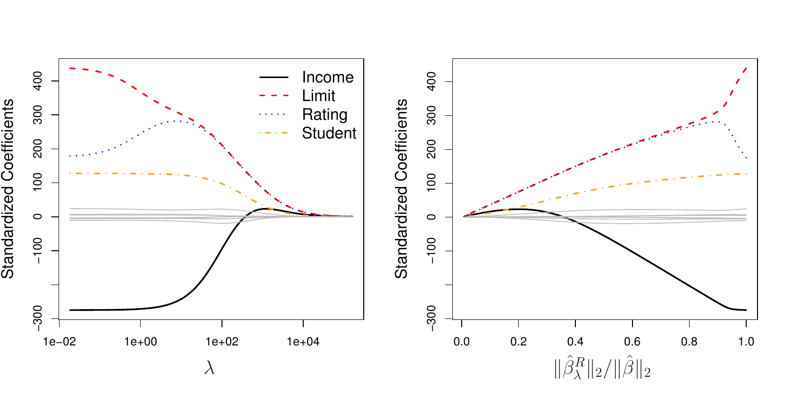
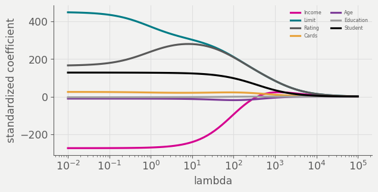
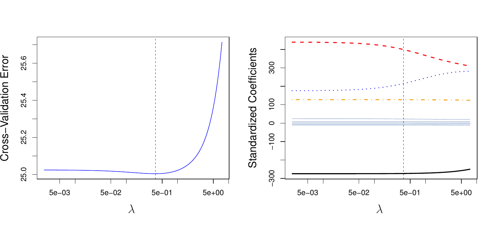
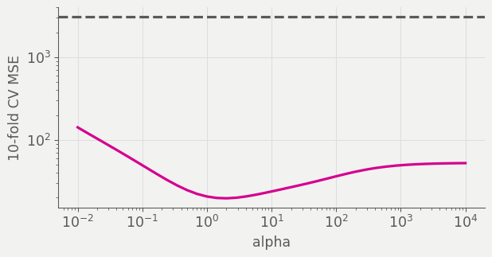

\(p > n\), so \(\mathbf{X}^T\mathbf{X}\) has rank at most \(n\)
Some column is a linear combination of the others
Determinants
A square matrix has an inverse exactly when its determinant is nonzero. For a two by two matrix, \[\left|\begin{matrix} a & b \\ c & d \end{matrix}\right| = ad - bc\]
Perfect collinearity sends the determinant to exactly zero. Near collinearity sends it near zero, which is worse, because the code still runs.
Four observations, an intercept column, and two predictors that would be
exactly proportional if the first entry were 3 instead of 3.01.
2
np.linalg.det is the determinant of \(\mathbf{X}^T\mathbf{X}\) and np.corrcoef(...)[0, 1] is the correlation between the two predictor columns. The determinant is tiny and the correlation is essentially 1.
(0.0056, 0.999993)
np.linalg.solve(X.T @ X, X.T @ y).round(2)
1
np.linalg.solve returns the least squares coefficients anyway, since the
determinant is nonzero. The magnitudes are the warning.
A determinant near zero means the entries of the inverse are enormous, so the variances on its diagonal are enormous. Refit on a slightly different sample and \(\hat\beta\) moves a long way.
The shrinkage penalty: the sum of squared coefficients, small when every \(\beta_j\) is near zero. The sum starts at \(j = 1\), so the intercept is never penalized.
The tuning parameter, chosen by cross-validation. At \(\lambda = 0\) this is least squares. As \(\lambda \rightarrow \infty\) every coefficient goes to zero.
\(\mathbf{I}\) is the identity matrix, so \(\lambda\mathbf{I}\) adds \(\lambda\) to every diagonal entry of \(\mathbf{X}^T\mathbf{X}\) and nothing anywhere else.
That sum is invertible for any \(\lambda > 0\), however collinear the predictors are and even when \(p > n\). Set \(\lambda = 0\) and the whole expression collapses back to the least squares estimate.
Ridge as a budget
Minimizing RSS \(+ \lambda\sum_j\beta_j^2\) is the same problem as minimizing RSS subject to \(\sum_{j=1}^{p}\beta_j^2 \leq s\), for a value of \(s\) that depends on \(\lambda\).
A budget for how large the coefficients may get, spent however the fit likes. Large \(\lambda\) is a small budget.
Ridge in one dimension
With \(n = p\) and \(\mathbf{X} = \mathbf{I}\), the ridge estimate has a closed form: \[\hat\beta^R_j = \frac{\hat\beta_j}{1 + \lambda}\]
Every coefficient shrinks by the same proportion. How many of them reach exactly zero at any finite \(\lambda\)?
Set \(\lambda = 0\) and compare it to \(\sigma^2(\mathbf{X}^T\mathbf{X})^{-1}\). As \(\lambda\) grows, does this go up or down?
What lambda buys
Ridge returns coefficients where least squares returns an error, and returns stable ones where least squares returns wild ones.
An estimate exists for every \(\lambda > 0\). What tells us which of those estimates to use?
Coefficient paths on Credit

ISLP Figure 6.4. Standardized ridge coefficients for Credit against \(\lambda\) on the left, and against \(\|\hat\beta^R_\lambda\|_2 / \|\hat\beta\|_2\) on the right.
Reading the paths
Far left: \(\lambda\) near zero, so these are the least squares estimates
Far right: every coefficient at zero, the null model
In between: a different fitted model for every \(\lambda\)
rating climbs before it falls. How, if the penalty only ever shrinks?
The same paths, computed

Ridge fit by hand on standardized Credit predictors, one solve per \(\lambda\), reproducing the left panel of ISLP Figure 6.4.
Multiply \(X_j\) by \(c\) and the least squares \(\hat\beta_j\) becomes \(\hat\beta_j / c\). The product \(X_j\hat\beta_j\) is unchanged, so every fitted value is unchanged.
\(\lambda\sum_j\beta_j^2\) is a sum over the coefficients. What does dividing one of them by 1000 do to that sum?
Every standardized predictor has standard deviation 1, so a shared \(\lambda\) means the same thing for all of them. StandardScaler inside the pipeline, where cross-validation refits it on each training fold.
ISLP Figure 6.5. Squared bias in black, variance in green, test MSE in purple, for ridge on a simulated data set with \(p = 45\) and \(n = 50\).
Reading Figure 6.5
At \(\lambda = 0\) the bias is zero and the variance is enormous
Variance falls fast at first while bias barely moves
Past the minimum the coefficients are too small and bias takes over
Least squares, at \(\lambda = 0\), has almost the same test MSE as the null model at \(\lambda = \infty\).
Choosing lambda

ISLP Figure 6.12. Left: cross-validation error for ridge on Credit across \(\lambda\). Right: the coefficient estimates, with the chosen \(\lambda\) marked.
When p approaches n

Fifty observations, 45 predictors, all with nonzero true coefficients. The dashed line is least squares on the same folds.
Ridge is scikit-learn’s ridge regression. Its penalty parameter is named alpha rather than lambda, since lambda is a reserved word in Python.
2
Student is categorical, so comparing it to "Yes" and calling .astype(float) turns it into a single 0/1 indicator column.
3
make_pipeline(StandardScaler(), Ridge(alpha=100)) puts the scaler in
front of the model, so the standardization is learned on whatever data the pipeline is fit to and never from a held-out fold.
4
fit[-1] is the last step of the pipeline, the fitted Ridge object, so fit[-1].coef_ holds the coefficients on the standardized scale.
Income -94.8
Limit 211.4
Rating 209.4
Cards 22.4
Age -18.8
Education -0.7
Student 98.1
dtype: float64
np.logspace(-2, 5, 60) builds 60 candidate values evenly spaced on a log
scale from 0.01 to 100,000, since what matters about alpha is its order of magnitude.
2
"ridge__alpha" reaches the alpha parameter of the pipeline step named ridge, using the double underscore from Meeting 6.
3
The least squares cross-validated MSE on identical folds, for comparison.
(np.float64(0.202), np.float64(9897.5), 9903.5)
Ridge picks a tiny alpha here and barely beats least squares. What is different about Credit compared to Figure 6.5’s simulation?
Watched coefficients swing under resampling, computed the ridge solution by hand across a grid of \(\lambda\), showed that changing units changes an unscaled ridge fit, and beat least squares by a factor of 150 when \(p\) approached \(n\).
Before Friday
Read ISLP Sections 6.2.2 to 6.2.3
Problem set 4 due Friday
Ridge shrinks every coefficient toward zero and sets none of them to zero. When would that be a problem?